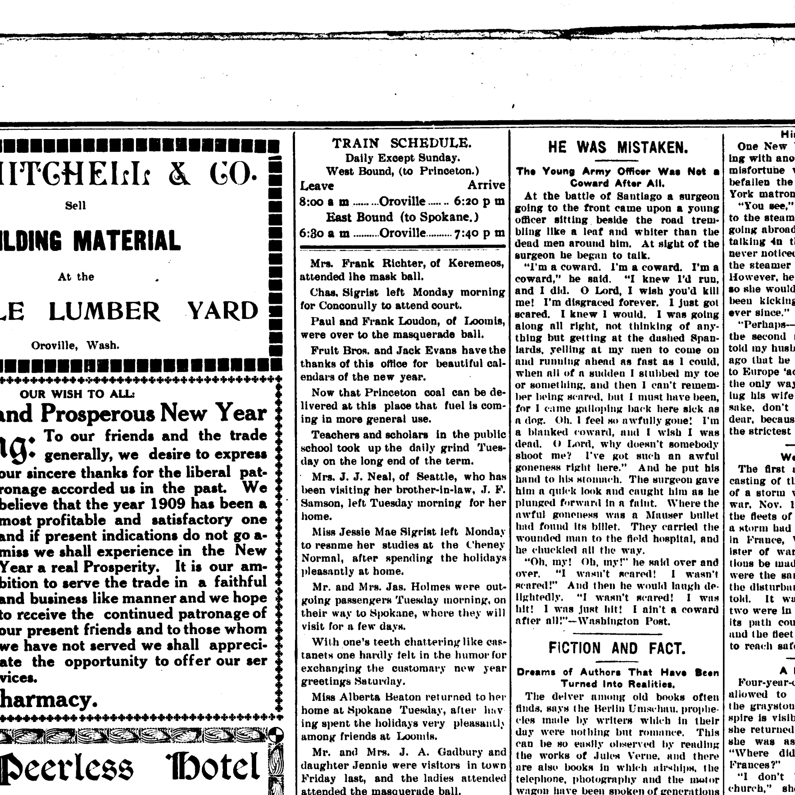

Edward Newman 1844–1909
Peter's great-great-grandfather by adoption.
Edward Newman was born on 17 Apr 1844 in Freethorpe, England, United Kingdom1, the son of William Robert Newman and Elizabeth Flower10. He married Harriet M Brate in 1870 (according to an online family tree)2. He arrived at New York, United States between Apr 1861 and 14 Mar 1863 (according to an online family tree)8. He died on 24 Jul 1909 in Conconully, Washington, United States (according to an online family tree)2 and was buried at Conconully Cemetery, Washington, United States (according to an online family tree)2.
Family
- Parents
- William Robert Newman 1813–1890 and Elizabeth Flower b. 1814 tradition
- Wife
- Harriet M Brate 1847–1924 · married in 1870
- Children
- Carrie May Newman 1878–1970 tradition
- Edward Newman Jr. 1875–1945 documented
- William Newman b. 1882 documented
- Lilly E. Newman b. 1882 documented
- Grover Cleveland Newman 1886–1949 documented
Life events
| Event | Date | Place and details |
|---|---|---|
| Born | 17 Apr 1844 | Freethorpe, England, United Kingdom Preferred version: His 12 May 1844 baptism and both the 1851 and 1861 England censuses give Freethorpe, Norfolk, where his parents lived from 1839; Great Yarmouth on the FamilySearch tree is his father's birthplace.1 |
| Born | 17 Apr 1844 | Great Yarmouth, Norfolk, England, United Kingdom According to an online family tree2 |
| Baptised | 12 May 1844 | Freethorpe, Norfolk, England, United Kingdom According to an online family tree2 |
| Lived | 1851 | Freethorpe, England, United Kingdom According to an online family tree2 |
| Lived | 1861 | Freethorpe, Norfolk, England, United Kingdom According to an online family tree2 |
| Arrived | bet Apr 1861 and 14 Mar 1863 | New York, United States According to an online family tree8 |
| Military service | bet 14 Mar 1863 and 28 Jan 1865 | New York, United States Enlisted 14 Mar 1863 at Buffalo, New York, as a private, aged 18; mustered 31 Mar 1863 into Co. A, 8th New York Heavy Artillery; severely wounded in the right elbow at Cold Harbor, Virginia, 3 Jun 1864; discharged for wounds 28 Jan 1865 at Washington, DC. According to an online family tree7 |
| Lived | bet Jul 1874 and 3 Jul 1875 | Yates, United States3 |
| Lived | 24 May 1878 | Oak Orchard, United States According to an online family tree4 |
| Lived | 1880 | Ash Rock, United States According to an online family tree2 |
| Lived | bet 1882 and Aug 1892 | Gilliam County, Oregon, United States5 |
| Lived | Mar 1882 | California, United States6 |
| Lived | 1900 | Toroda Creek, Washington, United States According to an online family tree2 |
| Died | 24 Jul 1909 | Conconully, Washington, United States According to an online family tree2 |
| Note | 29 Nov 1909 | Conconully, Washington, United States Probate of the estate of Edward Newman, Sr., deceased, in the Superior Court of Okanogan County, Washington: J. F. Samson of Oroville appointed administrator on 29 November 1909 (Notice to Creditors published 3–31 December 1909) and final account set for settlement on Tuesday, 7 May 1912 at 10:00…9 |
| Buried | Conconully Cemetery, Washington, United States According to an online family tree2 |
Records

Sources
- Baptism of Edward Newman (12 May 1844), 1851/1861 England Censuses, Freethorpe, Norfolk, and FamilySearch tree L6VS-9M9 (b. 17 Apr 1844).
Edward Newman: Baptism 12 May 1844 @ Freethorpe, Norfolk, England, United Kingdom; ParentChild: William Robert Newman, Elizabeth … 1851 Census (SGBB-G9Q) & 1861 Census (M7X1-DM9): Birth 1845 @ Freethorpe, Norfolk … L6VS-9M9: Birth 17 April 1844
Born 17 April 1844 (per FamilySearch tree L6VS-9M9) and baptised 12 May 1844 in Freethorpe, Norfolk, England, where his parents William Robert Newman and Elizabeth lived (JQQW-5N5); both the 1851 and 1861 England censuses (SGBB-G9Q, M7X1-DM9) record his birthplace as Freethorpe, Norfolk (c. 1845), whereas FamilySearch tree L6VS-9M9 conflates his birthplace with his father's birthplace of Great Yarmouth.
- FamilySearch Family Tree: Edward Newman (L6VS-9M9).
- NUMIDENT and 1945 Washington death record of Edward Newman Jr..
Edward Junior Newman: Birth 3 Jul 1875 @ Lindenville, New York, United States; Father: Edw Newman; Mother: Harriett Brate
Lived in Lyndonville ('Lindenville', Town of Yates), Orleans County, New York with his wife Harriet M. Brate when their eldest son Edward Newman Jr. was born there on 3 July 1875 (or July 1874 per the 1900 census).
- FamilySearch Family Tree: Carrie May Newman (KGWM-KQ2).
Carrie May Newman (KGWM-KQ2): Birth 24 May 1878 @ Oak Orchard, Ridgeway, Orleans, New York, United States
Lived in Oak Orchard, Town of Ridgeway, Orleans County, New York when his daughter Carrie May Newman was born there on 24 May 1878.
- NUMIDENT and 1949 Washington death record of Grover Cleveland Newman, 1901 BC marriage of Lilly E. Newman, and 1892 elopement from Fossil.
Grover Cleveland Newman: Birth 28 Apr 1887 @ Fossil Wheel*, Oregon, United States; ParentChild: Edward Newman, Hattie M Brate … Lilly E Newman (JD8G-HXW): Birth 1882 @ Fossil, Oregon … Winter Scott Alderson (L51K-5YQ): Eloped 16 August 1892 @ Fossil, Gilliam, Oregon, United States
Settled in Fossil, Gilliam County, Oregon, where his children Lilly E. Newman (born 1882 in Fossil per JD8G-HXW; Jan 1884 in Oregon per MMPL-98T) and Grover Cleveland Newman (born 28 April 1887 in Fossil per NUMIDENT 6KW1-MWL6; 28 April 1886 in Fossil per 1949 WA death record HV8L-SSN2) were born and from where his daughter Carrie May Newman eloped on 16 August 1892 (per FamilySearch tree L51K-5YQ).
- Household of Edward Newman, Toroda Creek, Okanogan, Washington.
William Newman: Birth Mar 1882 @ California; Census 1900 @ Toroda Creek, Okanogan, Washington, United States; RelationshipToHead=Son; Age=18y
Moved west with his wife Harriet via California, where their son William Newman was born in March 1882 according to the 1900 US census.
- FamilySearch Family Tree: Edward Newman (L6VS-9M9).
Newman, Edward, Pvt. … Co. A. 8th. NY. Heavy Artillery … Enlisted on 3/14/1863 at Buffalo, NY as a Private. On 3/31/1863 he mustered into "A" Co. NY 8th Heavy Artillery. He was discharged for wounds on 1/28/1865 at Washington, DC. He was listed as: Wounded 6/3/1864 Cold Harbor, VA (Severe wound in right elbow)
Enlisted 14 Mar 1863 at Buffalo, New York, as a private, aged 18; mustered 31 Mar 1863 into Co. A, 8th New York Heavy Artillery; severely wounded in the right elbow at Cold Harbor, Virginia, 3 Jun 1864; discharged for wounds 28 Jan 1865 at Washington, DC.
- FamilySearch Family Tree: Edward Newman (L6VS-9M9).
Enlisted on 3/14/1863 at Buffalo, NY as a Private.
Came to America between the 1861 England census, which lists him at Freethorpe, Norfolk, and his enlistment at Buffalo, New York, on 14 March 1863. The FamilySearch tree's 'immigration 1865' is the year of his discharge from the army (28 Jan 1865).
- Notice to Creditors / Notice of Settlement of Account (Estate of Edward Newman, Sr., Deceased), Oroville Weekly Gazette (Oroville, Washington), 31 December 1909, p. 8; and 12 April 1912, p. 4.
NOTICE TO CREDITORS IN the Superior Court of Okanogan county, state of Washington. In the matter of the estate of Edward Newman. sr.. deceased. Notice is hereby given that on November 29, 1909, the undersigned was duly anil regularly appointed by the above entitled court as ad mini*- irator of the estate of Edward Newman, Sr., deceased, and ail persons having claims aeainsl said estate will present the same to me in legal form within one year from the date of the ilrst publication of this notice at my ottice at oroville, Okanogan county, Washington, or the same will be fo.ever barred. .1. F. SAMSON, Administrator of said estate. Date of first publication December 3, 1909. Date of last publication December 31, 1909.
Translation: NOTICE TO CREDITORS: In the Superior Court of Okanogan county, state of Washington. In the matter of the estate of Edward Newman, Sr., deceased. Notice is hereby given that on November 29, 1909, the undersigned was duly and regularly appointed by the above entitled court as administrator of the estate of Edward Newman, Sr., deceased, and all persons having claims against said estate will present the same to me in legal form within one year from the date of the first publication of this notice at my office at Oroville, Okanogan county, Washington, or the same will be forever barred. J. F. SAMSON, Administrator of said estate. Date of first publication December 3, 1909. Date of last publication December 31, 1909.
Probate of the estate of Edward Newman, Sr., deceased, in the Superior Court of Okanogan County, Washington: J. F. Samson of Oroville appointed administrator on 29 November 1909 (Notice to Creditors published 3–31 December 1909) and final account set for settlement on Tuesday, 7 May 1912 at 10:00 a.m. in the Superior Court at Conconully before Judge E. K. Pendergast (Wm. S. McClure, County Clerk).
- FamilySearch Family Tree: Edward Newman (L6VS-9M9), parents.